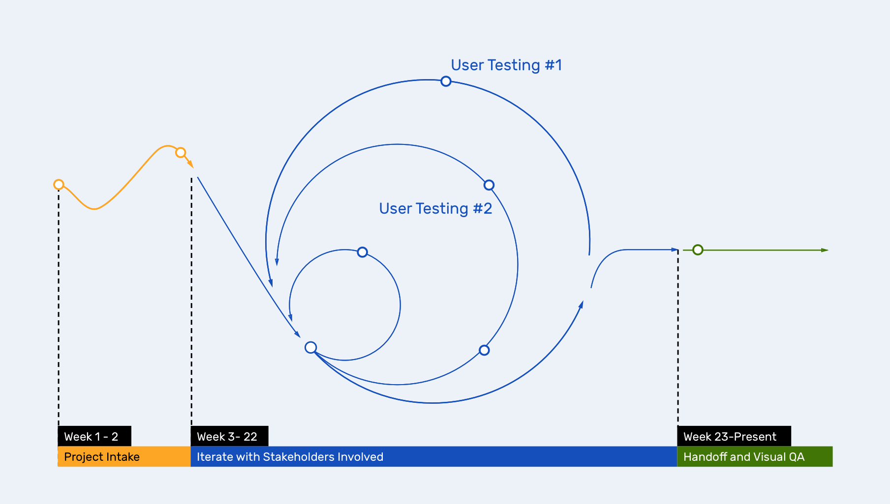
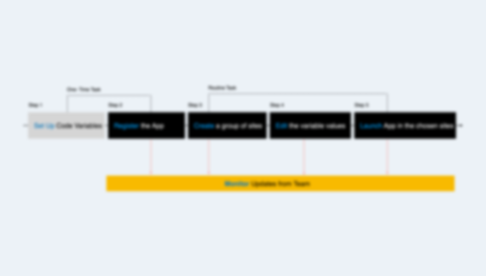
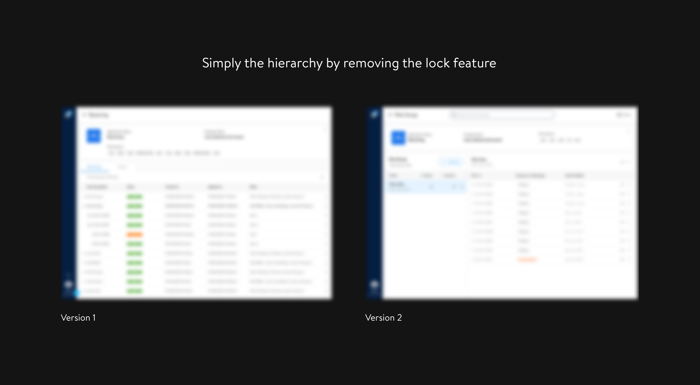
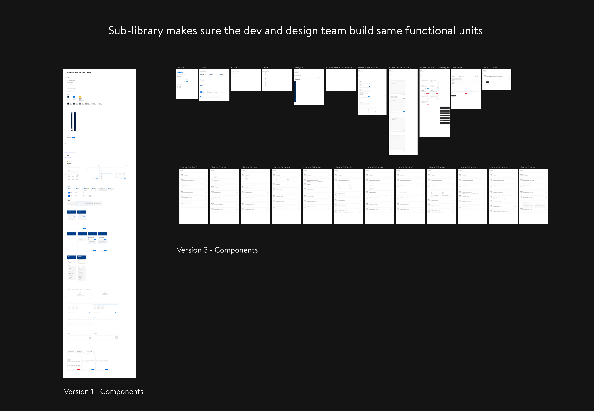
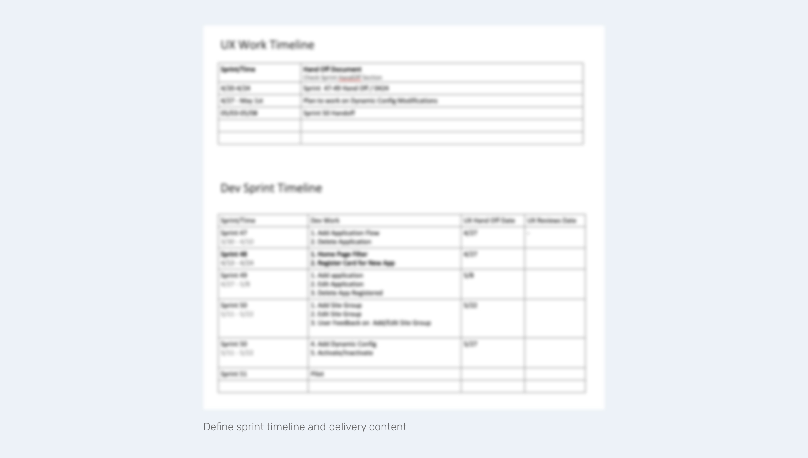
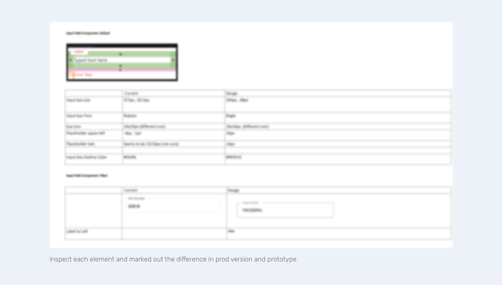

MyApps
One stop shop for product launch at Walmart Supply Chain
Background
There are more than 20 teams building products for Walmart Distribution Centers. They all follow similar product launch process: Features roll out to DCs in different phases. This method helps to discover new user problems and avoid abrupt changes in more than 200+ DCs across the country.
When the product team rollout a new feature, they need to decide which ditribution center will have access first. Product managers need to submit a proposed Distribution Center list to the leaderships. The leadership team will evaluate the value and risk of this launch plan.
Then for the dev team, they need to figure out how to customzie code based on the rollout plan. Even if it is the same type of DC, each building can have different areas, infrastructure, or state policy. Developers need to spend a lot of time to create new packages, customize code packages and test. This is a rarely known process but very effort demanding.

My role
As the only designer in this project, I lead the design process to bulld a centralized portal to help product teams in Supply Chain manage their launch process. I translated the product requests to clean, simple and functional prototype. I also helped to implement Living Design system to keep consistent visual launguage.
Impact
The product is being built after three main design phases. The process and outcome is shared within our design team. My design managers commented that: "You have pushed it a long way and make a complicated process very easy and simple."
Due to Non-disclosure Agreement, I am not able to display detailed process and business content inside my portfolio. If you are interested to learn more about this project, please send me a message through LinkedIn: @Yingxiao Ouyang or Email: @ lunaatlgt@gmail.com.
Design Intake
Be willing to challenge
There is one feature that takes me a long time to figure it out. A lock feature to avoid customized code being overrided by parent settings. After showing users the wireframes, I found that this feature was against their past experience. For example, in CSS files, once we customized a class, changes in child class won't be affected by its parent class, no matter what changes are made on the parent class.
I came up with two design solutions, one with the lock feature and one without. I shared the prototypes with my team and explained why the lock is not a great feature for users. Viewing these concept side by side, it makes them rethink about the value of it. Most of the team members are developers and they can quickly think of a lot of examples to show why the lock may not be a good idea.
We finally decided remove the lock flow. It helps to keep the hierachy clan and simple. What I learned is that, we shouldn't limit ourself to just create what PMs/teams told us to. When we do have an opinion towards certain requests, we can collect evidance, show our suggestions and boost communication inside the team. This will help us reflect on our products and discover users' behaviors. The result often leads to better outcome.
Design with and without a Design System
One of the biggest challenge of this design project is about design system. When the project starts, the Living Design System_ Associate Version is being built. The ultimate goal in our team is that all the platform should have the same look and feel. While I cannot wait until the Living Design system are fully built, I started building the platform with the approved component first.
In order to keep track of customized components, I generated a sub-lirary for this platform. It documents the colors, fonts, components and iteractions used in the platform. This allows me to focus on usability and generate designs that matches the users needs. It also allows dev team to create reusable components which were easy to customzied later. After our second design handoff, the Living Deisgn system_Associate Version was officially launched. We re-evaluated all the components, discussed where are the gaps and spend two months to reskin the platforms.
I learned a lot going through this process to design with and without a design system. It makes me aware that design system is not just provide a solution that everyone follows. For example, I designed a site selector in MyApps, which were later selected to be a new component in the living design system. It was then redesigned for not only selecting Distribution Centers, but also Stores. Later the dropdown component in Living Design are also redesigned in order to match this mass selection scenario. This colloborated design process of discovering problems and provide standard solution reassures me that by making our design consistent, we are actually moving foward as a whole team.
Process Intake
Be open to suggestions
Since it is a platform for developers to use, the platforms contains a lot of tech jagons. In order to design a platform that fits the user habits, we scheduled weekly reviews with the tech teams.
With an open-mind for feedback, there are several methods I used to collect feedback: 1. Aksing them why. When interviewing tech teams who are tech savvys, they can easily come up with a solution. It is always great to document the reasons than implementing the solutions; 2. Make sure the team can provide feedback even after design handoff. I documented those feedback in InVision and when a new design request comes, I selected the related ones to be solved together.
For example in the app detail page, a comment was about allowing users to search. I was only able to put a search bar without detail flows due limited time. However, when the reskin project start, I revisited this comment and finalize the flows. This method greatly reduce the time needed to collect feedback and make adjustments.

Plan for handoff
This project is very time-sensitive. Thus my product team aims at hand something to users as soon as possible. After I designed the first version, I invited 2 teams to review the prototype and found many UX problems. Two months have passed at that time. We only have three months left. Developers want to start building as soon as possible. But I think the user testing result is not ideal. But I met great resilience when I ask if I can continue iterating the design.
To solve this problem, I negotiated with our product team. While the development team wants to build a castle at once, I suggested them to build each lego piece first. What we agreed on is that we separate the product flows into four main sprints. Developers can start building the flows that are ready, and I start iterating on those problematic flows. To make sure the plan works, I mapped out my delivery date and their development date.
The strategy worked out very well. It helps the development team to start early, but I also win time to went through the second round of iteration. The success rate and user satisfaction level have been greatly improved in our second user testing session. I cannot accomplish this without our development team's support. Aligned strategy and early discussion is a great lesson I learned.
Review codes to find gap
To make sure the platform is developed as the way it is intended to, I scheduled a visual QA session with our development team to find out the gaps together. I found out that sometimes, devs can eyeball the design details or interpret the visuals in a different way.
I used web Inspect and documented all the gaps I found between prod version and design mockup. The document gaves suggestions to every component in both visual and interaction details. I checked the design files and found some elements failed to load in InVision Inspect, which leaves developers unsure what to do. By fixing both the prototype and the prod version, the platform turns out to be the way we wanted them to be.
I think the ultimate goal to review code is not telling the devs that they are wrong, but to build a platform together with our different strength. Handoff is really not the end of designers' work.
Summary
I wanna express my gratituade to my team for helping me through this process. While what presented above seems to be easy and straight-forward, it took us sometime to figure out all the details.